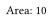
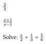
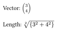
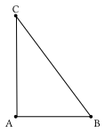
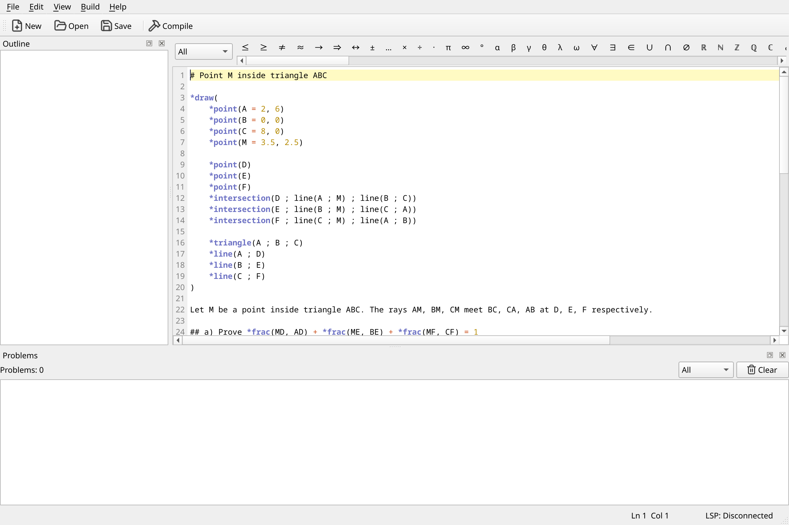
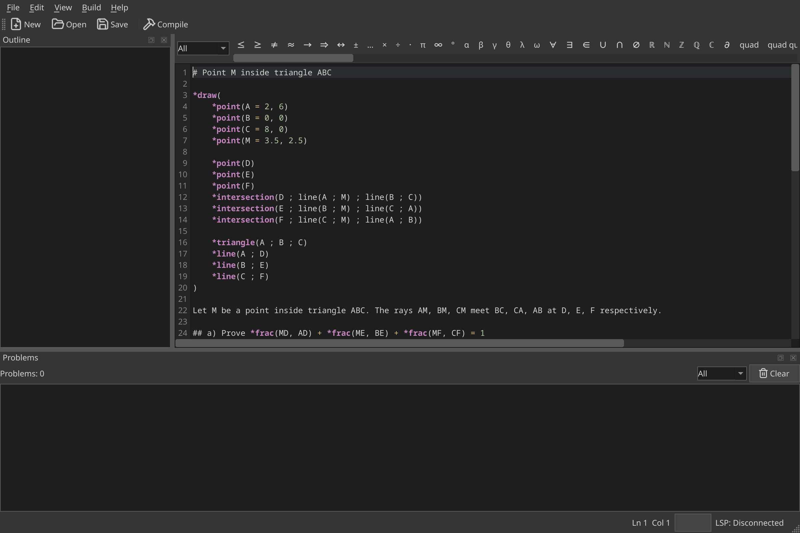
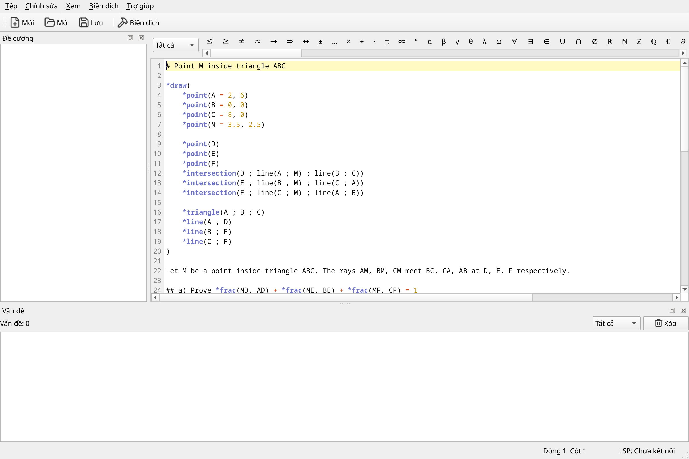
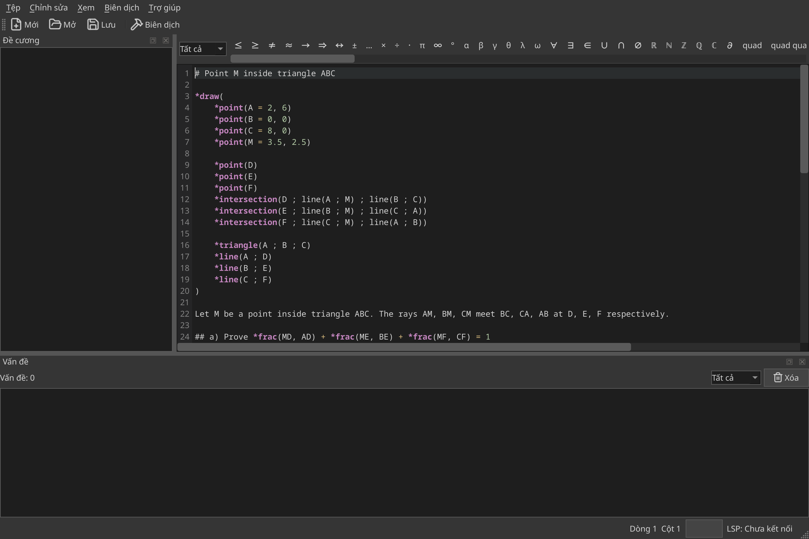
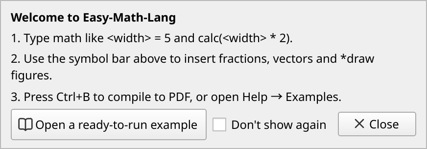
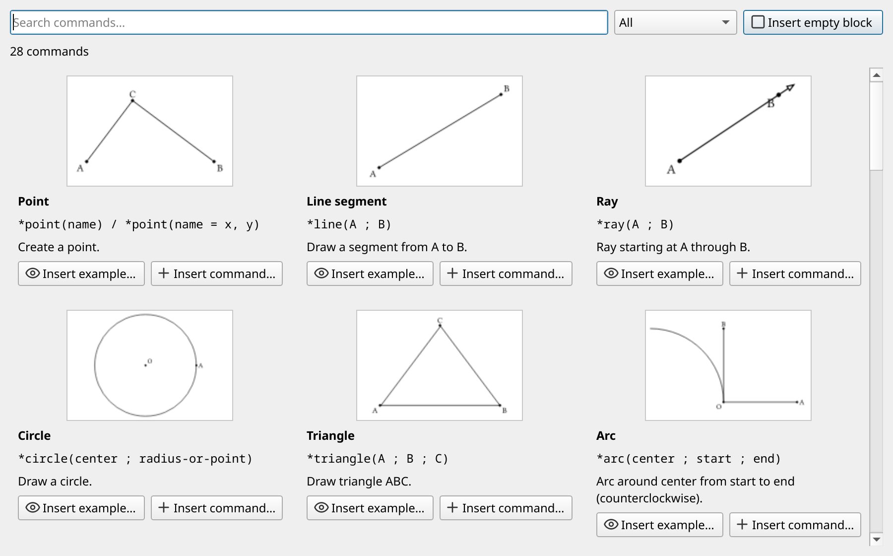

Basic math
<width> = 5
<area> = calc(<width> * 2)
Area: <area>
Variables and calc() do the arithmetic for you.
The four ready-to-run samples from the editor's own Examples menu, compiled by the project compiler. Nothing on this page is drawn by hand.
<width> = 5
<area> = calc(<width> * 2)
Area: <area>
Variables and calc() do the arithmetic for you.
*frac(2 ; 3)
*frac(x + 1 ; x - 1)
Solve: *frac(x ; 2) + *frac(1 ; 3) = *frac(5 ; 6)
*frac() typesets fractions, and the equation is written like text.
Vector: *vec(3 ; 4)
Length: *root(2 ; *pow(3 ; 2) + *pow(4 ; 2))
*vec() and *root() build the vector and its length.
*draw(
*point(A = 0, 0)
*point(B = 3, 0)
*point(C = 0, 4)
*triangle(A ; B ; C)
)
The *draw block draws a triangle with the constraint solver.
Screenshots of the real Easy Math Editor, rendered from the application itself.






Everything below ships with the app today.
The full Greek alphabet, arrows, relations and set/logic symbols — click to insert at the cursor.
28 geometry commands, each with a thumbnail, its syntax and a one-line description.
Error checking with a plain-language explanation for every message, plus autocompletion and hover information.
Switch the interface with View → Language…. Vietnamese input methods (Telex via fcitx5) are supported on Linux.
Typing ( [ { or " inserts the matching closing character, and Backspace removes an empty pair.
File → Export As… writes PDF, PNG, SVG, HTML or the Typst source.
View → Live Preview recompiles as you type and shows the result next to your code.
Ctrl+Shift+P runs any command by name; Ctrl+Shift+G opens the geometry gallery.
Installers for every platform are published on the releases page. The link below always points at the latest release.
Arch Linux users: the repository also ships a PKGBUILD. All releases on GitHub Or run it from source — see the installation guide.
The guides live in the repository as plain Markdown.